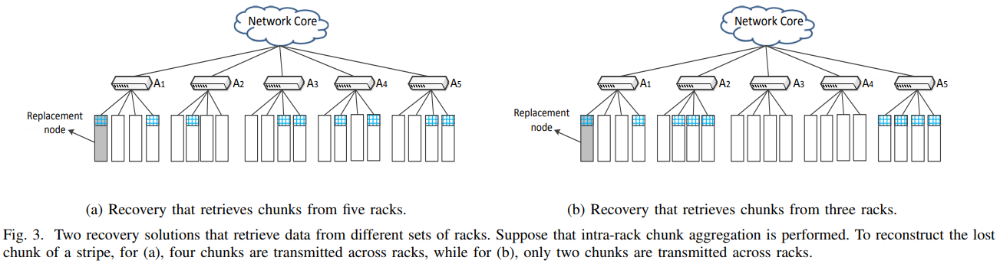
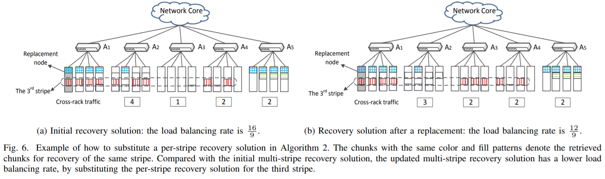

existing studies on single failure recovery neglect the bandwidth diversity propert in CFS archiecture (intra-rack and cross-rack).
Many single failure recovery solutions focus on XOR-based erasure-codes, which are not commonly used for maintaining fault tolerance in a CFS.
Existing single failure recovery solutions focus on minimizing the amount of repair traffic, but most of them do not consider the load balancing issue during the recovery operation.
To this end, this paper aims to reduce and balance the amount of cross-rack repair traffic for a single failure tolerance.
Cross-rack-aware Recovery (CAR)
Three key techniques:
CAR examines the data layout and finds a recovery solution in which the resulting reapir traffic comes from the minimum number of racks.

This method is not very complex, just needs to the layout.
CAR performs intra-rack aggregation for the retrieved chunks in each rack before transmitting them across racks in order to minimize the amount of cross-rack repair traffic.
After finding the minimum number of intact racks to be accessed for recovery, it also performs intra-rack chunk aggregation for the retrieved chunks in the same rack. (partial decoding)
Due to the linearity, suppose the first requested chunks are stored in the same rack, so it can specify a node in that rack to perform the linear operations based on the
CAR examines the per-stripe recovery solutions across multiple stripes, and constructs a multi-stripe recovery solution that balances the amount of cross-rack repair traffic across multiple racks.
To describe the load balance rate of the cross-rack repair traffic, it defines it as follows:
The ratio of the maximum amount of cross-rack repair traffic across each rack to the average amount of cross-rack repair traffic over the intact racks.So it formulates this question into an optimization problem.
Goal: minimize the load balancing rate, subject to the condition that the total amount of cross-rack repair. (Minimize , subject to is minimized)
The main idea of it is to replace the currently selected multi-stripe recovery solution with another one that introduces a smaller load balancing rate

Implementation and Evaluation:
Evaluation:
Cross-Rack Repair Traffic: evaluate the amount of cross-rack repair traffic when recovering a single lost chunk.
Load Balancing: measure the laod balancing rate (i.e, )
Computation Time and Transmission Time
Strength (Contributions of the paper)
this paper identifies the open issues that are not addressed by existing studies on single failure recovery.
It proposes CAR, a new cross-rack-aware single failure recovery algorithm for a CFS setting.
It also implements CAR and conduct extensive testbed experiments based on different CFS settings with up to 20 nodes.
Weakness (Limitations of the paper)
Firstly, this paper does not provider the details of how to implement this recovery scheme in to a proactical system, e.g., how to achieve the partial decoding?
The idea of this paper is not vey novel and easy to understand. I think the performance of this scheme highly depends on the layout.
Future Works
A very serious issue is how to decrease the overhead of the partial decoding in the internal of the a rack.
For a specific layout, this scheme may lead to the skewed workload for a rack.